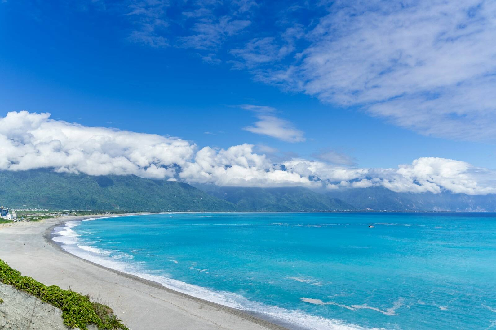
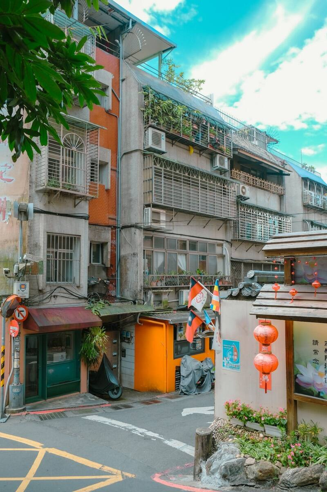
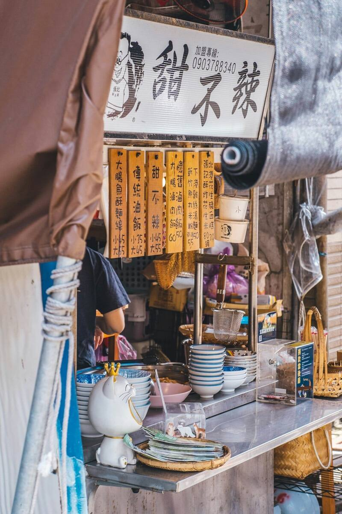
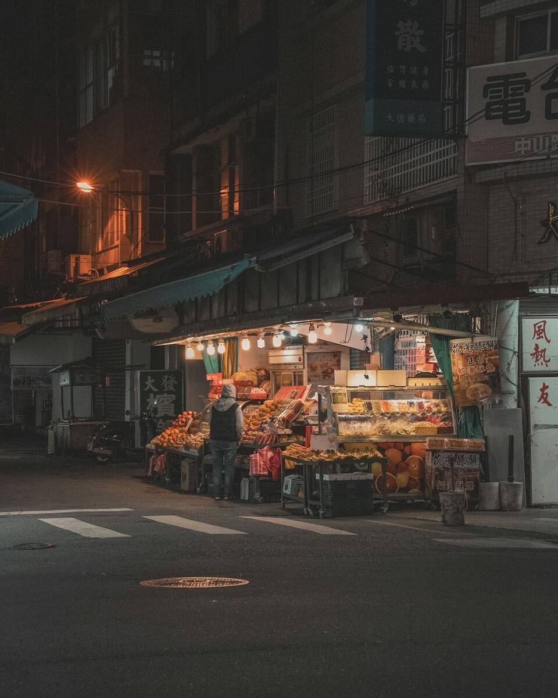
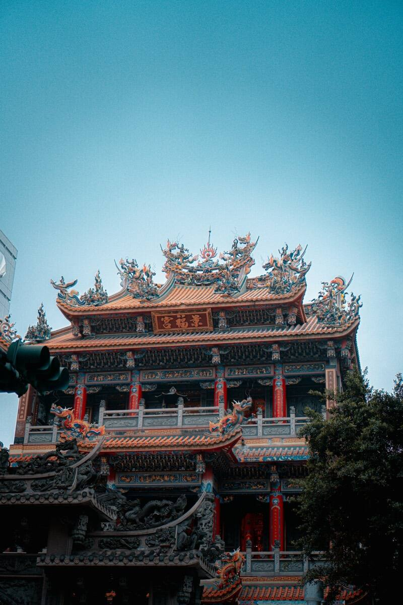
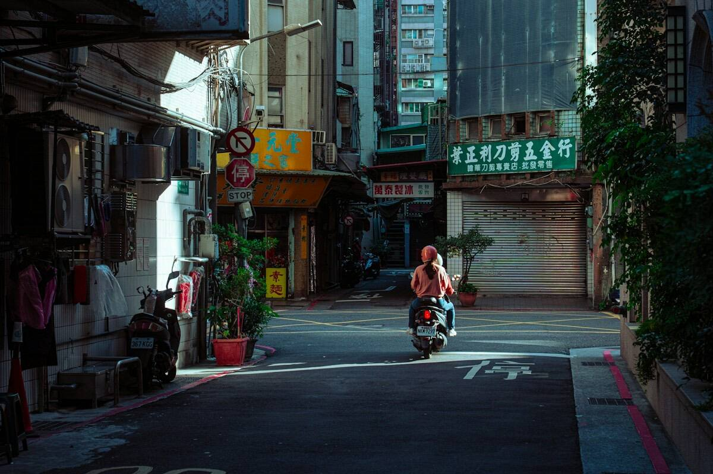

まずは、
となりの国の話から。
先行登録いただいた方には、旅の準備が整いしだい、いちばん最初にご案内をお届けします。
登録は無料です。現在、旅行商品の販売・予約の受付は行っていません。実際の旅行の手配は、提携する旅行会社が行う予定です。

※写真はイメージです日本 台湾 先行登録受付中
飛行機で、およそ2〜4時間。はじめての台湾を、観光地のひとつ向こうにある「ふだんの暮らし」から。となり旅は、日本と台湾をつなぐ、NWの新しい旅のかたちです。
登録は無料です。準備が整いしだい、LINEでご案内します。

となり旅とは
有名な景色も、もちろんすてきです。でも、旅のあとまで残るのは、朝の食堂の湯気や、路地を抜けるスクーターの音だったりします。
となり旅は、台湾の旅行会社との連携を前提に、地元の人の「いつもの台湾」に触れる旅を準備しています。
はじめてでも
日本から飛行機でおよそ2〜4時間。時差は1時間だけなので、到着したその日から動けます。
日本のパスポートなら、短期の観光はビザなしで渡航できます。週末に少し足すだけの旅も。※
ご相談はすべて日本語で。わからないことは、LINEで気軽に聞いてください。
※ 入国条件は変わることがあります。渡航前に最新の情報をご確認ください。
まだ知らない日常
となり旅で出会いたいのは、こんな場面です。行ってみたい場所や、やってみたいことは、先行登録のアンケートでぜひ教えてください。

湯気の立つ店先で、地元の人と同じ一杯を。

夜が深くなるほど、にぎやかになる通り。

暮らしのすぐそばにある、祈りの場所。

スクーターが行き交う、住宅街の午後。
※ 写真はイメージです。掲載している場面を含む旅行商品は、現在準備中です。
こんな方に
何から調べればいいかわからなくても大丈夫。行き先や時期の相談から始められます。
お子さまから親世代まで、みんなが無理なく楽しめる行程をいっしょに考えます。
ゆったりしたペースで、移動の負担が少ない旅を。気になることは事前に何でもご相談ください。
ご相談の流れ
下のボタンから、NWの公式LINEを友だち追加してください。
行きたい時期や、台湾でやってみたいことを教えてください。1分ほどで終わります。
旅の準備ができたら、LINEでお知らせします。個別のご相談もLINEで受け付けます。
先行登録いただいた方には、旅の準備が整いしだい、いちばん最初にご案内をお届けします。
登録は無料です。現在、旅行商品の販売・予約の受付は行っていません。実際の旅行の手配は、提携する旅行会社が行う予定です。